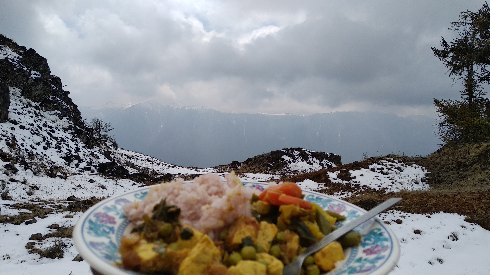
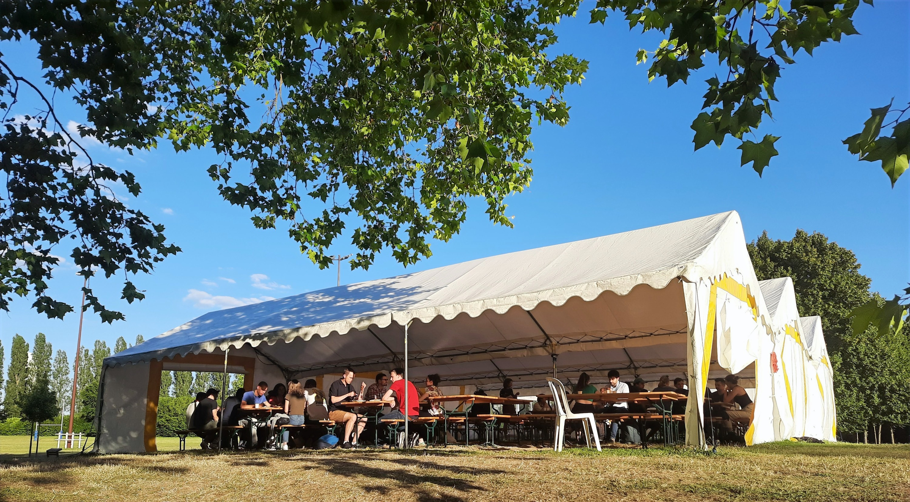

This time, in the group of 17, I hardly knew anyone closely from beforehand. In fact, I came to know that I was one of the trek leaders just two days before we were to leave, during our briefing and goods distribution meeting. My co-leader Amol and I had been on just one trek, that too incomplete — it was to the Pin-Parvati pass. Some rough experiences in that one made us suitable for leaders. Our doctor Rohit was a trek older than us, however. Anyway, let us begin with the story.
The passport crisis
It begins with the penultimate briefing from the club members who gave us our responsibilities. Being my first time, I had little clue about how to run everything smoothly. But I wasn't so scared. Maybe because I never thought that it could be such a big deal. They say ignorance is bliss.
Soon after, we made a WhatsApp group where our train tickets were shared. When we checked the status, the website greeted us with the first bad news: of 17 we had only 4 seats confirmed. On inquiring, we were assured of the magical conversion of waitlisted tickets to confirmed ones once the chart was prepared. We sidelined the issue with a small amount of apprehension.
The bigger issue will now be unfolded. About a week prior, our group had started raising concerns about the requirement of passports, as we were travelling to Bhutan. We were told we wouldn't need them. On the last day however, Gooman — our trek agent — dropped the bombshell and announced that we need to carry passports and sleeping bags after all. I was furious. It was almost next to impossible to get everybody's passport to Pheuntsholing (the border) via courier in just two days. Moreover, we were to reach on a Sunday when all postal services are closed.
Trek mates Pranisha, Shreya, Amit and Srinath were in a different soup altogether. Their guide had restrained them from going and they opted for travelling late. Finally, after slogging for hours and pulling all-nighters, they got permission on Friday morning. We were supposed to start in the afternoon that day. Magically, our seats got confirmed and we started off.
Meanwhile, several of us got our passports/Voter-IDs speed posted from different parts of the country — Hyderabad, Raipur, Kolkata and others — to a specific address near the Bhutan-India border in Jaigaon. As the impossibility of some documents reaching by Sunday afternoon became apparent, we had started tracking the packages via their IDs from Friday itself.
Gooman was an absolute delight (sarcastic, of course). He said that if everybody was not ready with their IDs by Sunday morning, he would just cancel the trek and take all our money. His deadline seemed pretty serious. Since deliveries would be closed on Sunday, we somehow had to get all IDs by Saturday itself.
The great package chase
On Saturday we were still in the train. Our strategy was to track and find closest approach. Whenever the ID of an individual came closest to the train route, he would get down and pick it up from the warehouse before it could be forwarded for delivery. Srinath had to go forward to Guwahati.
When we reached Jaigaon, we walked up to the immigration office and found that Gooman had been lying about the closing time. Just because things weren't on our side, he tried to make use of the opportunity. We had to think of other ways for Srinath, one of which was taking an Ola cab and the other was to board a train to Alipurduar.
Amit and Srinath had the most dramatic immigration ever. Srinath crossed the border around 5pm when the gates were about to close and the sun was about to set. After entering Bhutan we all exchanged hugs with one another and celebrated that we could hold off the Goo-devil till that time.
Heroes
Here is what I jotted down when we were finally in the bus headed for Thimpu, the capital of Bhutan:
"Srinath went through a lot of hassle. It started from the DTDC returning his passport to his home, his parents sending it from Hyderabad to Guwahati, the flight about to carry it having a fuel leak, the next flight taking the passport to Cochin without information, culminating with its final arrival at Guwahati under the proactive incessant pestering of Srinath at the airport in person, despite having fever. Initially everything went against him. I would be devastated had I been in his place. Every time he answered my calls with a cheerful 'Yes bro' which made me marvel at the calm he was keeping. It felt so great to finally see him and Amit cross the border that sometimes it seems unreal. Amit is one unbelievably selfless person. He accompanied Srinath on his trip to Guwahati, went back to Siliguri to get Shreya's passport, sparing Amol and Shreya the trouble of travelling for 8 hours. Without sleep, food or support, these two guys fought their way through inclement conditions to deliver the impossible. Hats off to them."
Nirbhay and Vishwadeep went through something similar but on a slightly smaller scale. Manoj bhai made sure I got good sleep as most of the time we shared beds. Saransh, using his "pyaar bhari" approach, made reasonable progress in dealing with our telephonic demon. Radhika's greatest bit was the capability to be happy and cool at all times — in moments of great tumult, she seemed the calmest.
Bhutan
"Now that we are together it feels like heaven. The atmosphere has never been so blissful. Pink Floyd, Lata Mangeshkar are playing. A small note of thanks to all my fellow trekkers aka friends, for being the sweetest."
We are now listening to the history of Bhutan from our sweet bus driver. Pema is a wonderful person. He said that he is truly happy in Bhutan. He has voluntarily taken up being a Cultural Tourist and is paid by the government to welcome guests and introduce them to their culture. In general Bhutan is a nature-loving country, dead against plastics. Honking is a rarity. Education and medical facilities are free.
